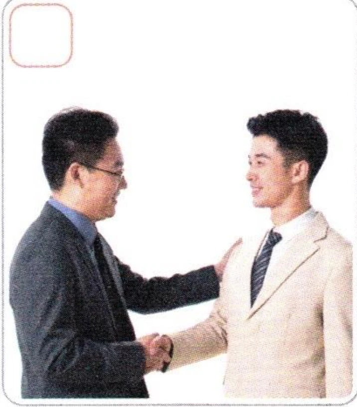
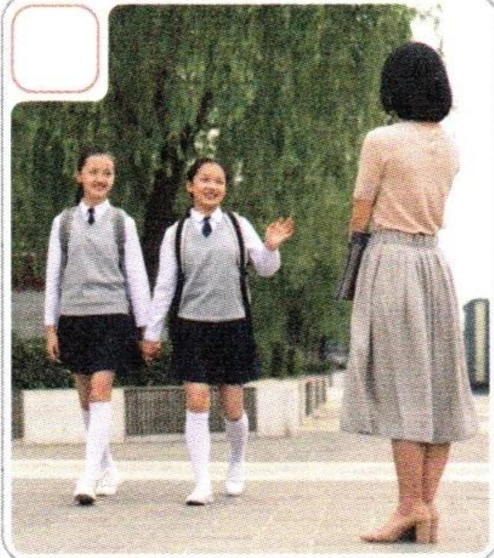
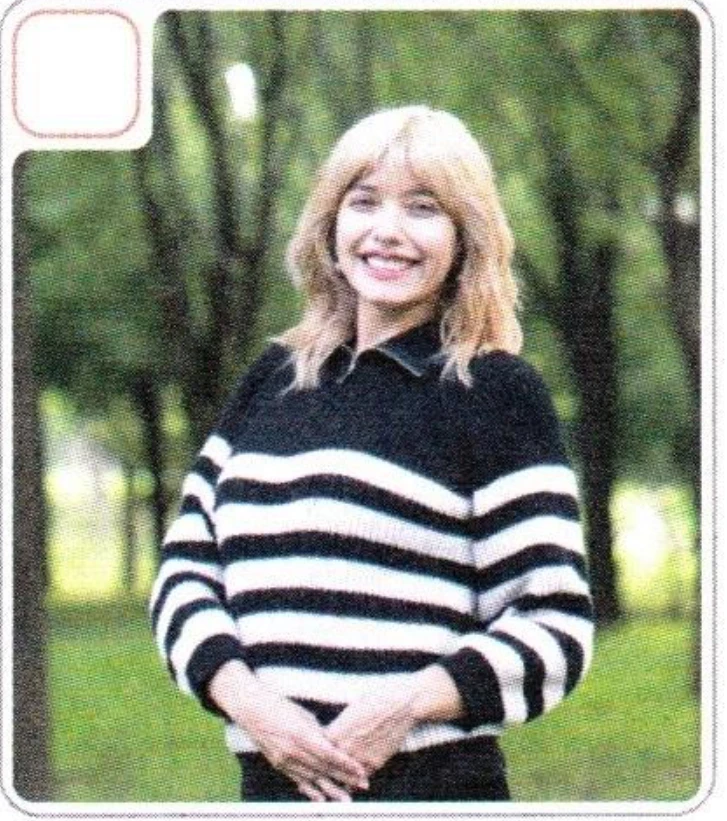

1听录音，写出听到的声母并大声朗读。Listen, write down the initials you hear, then read aloud.Прослушайте, запишите инициали, которые вы слышите, затем прочтите вслух.
iánīniǎngiàoièǐngǐùià
2听录音，写出听到的韵母并大声朗读。Listen, write down the finals you hear, then read aloud.Прослушайте, запишите финали, которые вы слышите, затем прочтите вслух.
jxqjqxjxjqxqjxq
3听录音，写出听到的声调并大声朗读。Listen, mark the tones you hear, then read aloud.Прослушайте, отметьте тоны, которые вы слышите, затем прочтите вслух.
xuejiaoqunjiuxinqingxiajiaqujixiaojie
4看图片，选择正确的对话。Look at the pictures and choose the correct dialogue.Посмотрите на картинки и выберите правильный диалог.



Lǎoshī, zàijiàn!Zàijiàn!
До свидания, учитель!
До свидания!
Duìbuqǐ.Méi guānxi.
Извините.
Ничего страшного.
Hěn gāoxìng rènshi nǐ.Rènshi nǐ wǒ yě hěn gāoxìng.
Приятно познакомиться.
Мне тоже приятно познакомиться.
Dàjiā hǎo, wǒ jiào Bái Jiāyuè.Bái Jiāyuè, nǐ hǎo.
Всем привет! Я Бай Цзяюэ.
Привет, Бай Цзяюэ.